Префектура Хоккайдо · Тоёкоро · обержа с дичью
ELEZO ESPRIT: обержа с дичью на холме над морем в Тоёкоро
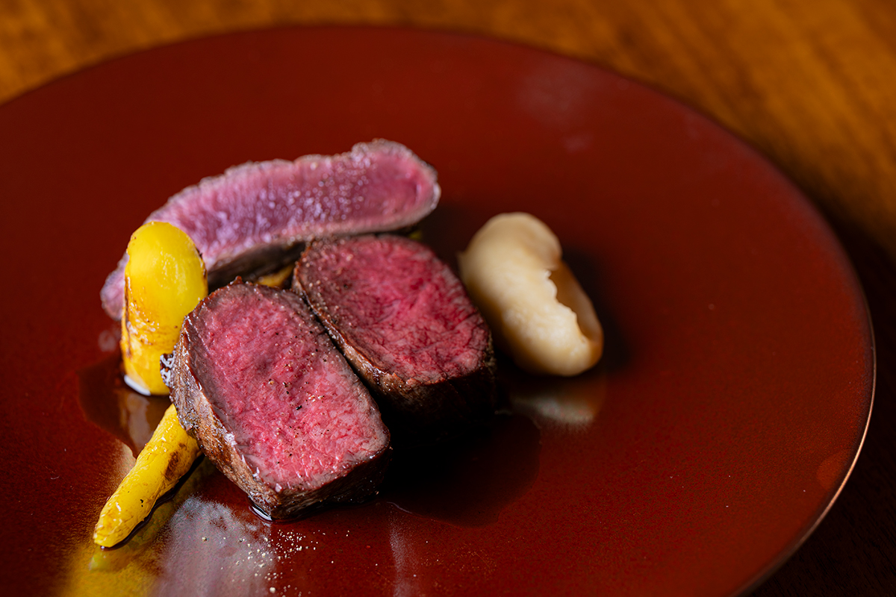
В октябре 2022 года на тихом побережье Токати открылась обержа ELEZO ESPRIT. Её построила команда поваров, которые сами охотятся, растят скот и делают шаркютри, и ужин здесь задуман как рассказ о звере от леса до тарелки.
Обержа
Ужин начинается у самой двери
ELEZO это команда поваров, которые работают с мясом от начала до конца. Их обержа ELEZO ESPRIT открылась в октябре 2022 года в маленьком городке Тоёкоро. Готовят здесь из дичи: оленя эдзо, бурого медведя, а также из того, что ELEZO выращивает сама, из трёхпородной свинины и чёрных кур сямо. Обержа не только кормит, но и объясняет, как думает ELEZO.
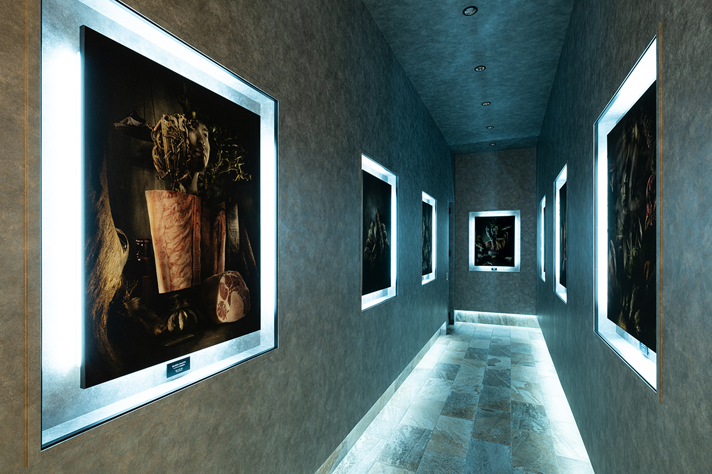
Тоёкоро стоит на юго-восточном краю равнины Токати. Когда-то сюда приезжали переселенцы, мечтавшие освоить новые земли, и именно они заложили основу сегодняшнего Токати. Глава ELEZO Сёта Сасаки захотел «заново освоить еду» и в 2009 году построил в районе Оцу, где природа почти не тронута, свою мясную лабораторию.
ELEZO сама охотится, растит скот и птицу, разделывает и выдерживает мясо, продаёт его и кормит гостей. «Это пока только первая глава», говорит Сасаки с загадочной улыбкой. Сама история началась в 2005 году. Окончив кулинарную школу, Сасаки учился в старом французском бистро в Токио, а потом вернулся на родной Хоккайдо, в ресторан, который держали его бабушка и мать в Обихиро. Однажды постоянный гость угостил его мясом только что добытой двухлетней оленихи, и этот вкус его потряс.
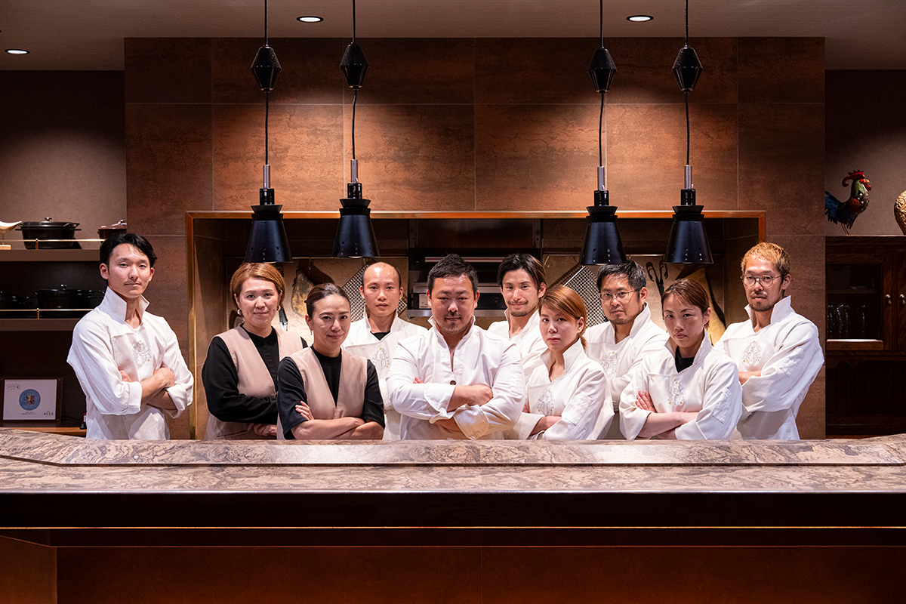
«Что я почувствовал, попробовав тогда эту оленину? Переживите это сами в ELEZO ESPRIT. Здесь собрано всё, к чему мы пришли за первую главу нашей истории. Времени немного, но мне хочется, чтобы гости ушли с головой в еду, встретились с жизнью, которая за ней стоит, и прикоснулись к нашей философии»
Сёта Сасаки
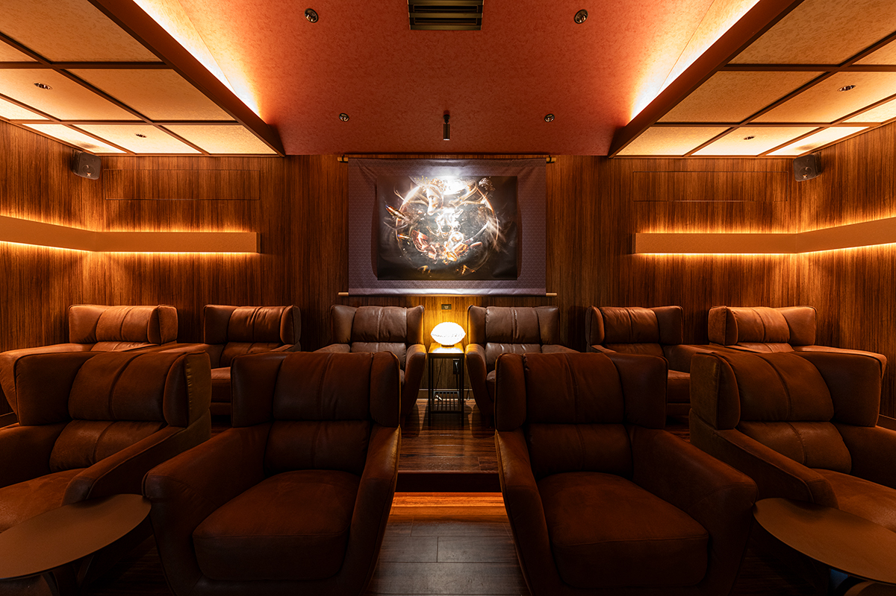
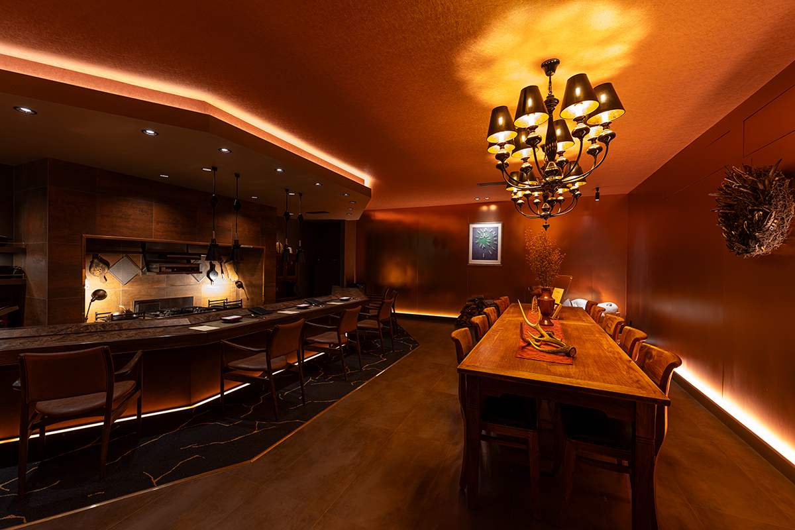
Ужин начинается в ту минуту, когда открывается дверь ресторана. Коридор с работами о ELEZO, фильм в комнате ожидания и наконец сам зал, где гостей встречают Сасаки и его команда: к этому моменту ожидание уже на пределе.
Ужин
Один зверь от супа до жаркого
В углу ресторана висит памятная карточка с надписью «Повар жизни». Сасаки это прозвище подходит: от живого зверя до блюда на тарелке ELEZO отвечает за всё сама.
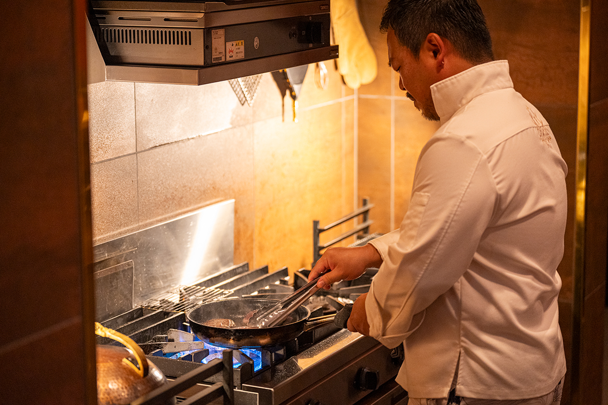
«Мы не теряем ни кусочка мяса, ни капли крови. Хотим, чтобы гость съел всё без остатка, поэтому стараемся раскрыть вкус продукта как можно полнее»
Сёта Сасаки
Эту мысль воплощает первое блюдо, «Суп жизни». Это прозрачный янтарный консоме из костей, сухожилий и голяшки оленя эдзо с ароматными овощами и водой, больше в нём ничего нет. Когда желудок согрет, приносят шаркютри из тех частей туши, которые ресторанам нужны реже всего.
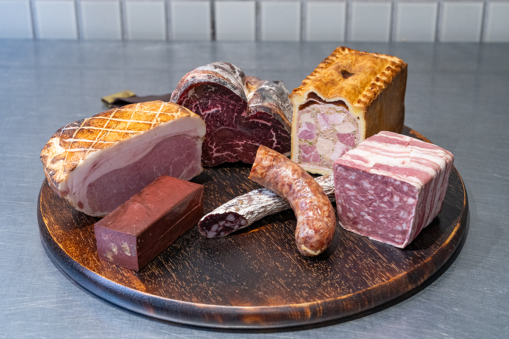
«Соли и специй в шаркютри минимум. Мы не пытаемся перекрыть продукт, мы думаем, как раскрыть его возможности»
Сёта Сасаки
С блюдами так же: готовят просто, а простота требует точной руки. За шаркютри следуют местная рыба и свинина, и наконец наступает очередь жареного оленя эдзо, того самого вкуса, который когда-то потряс Сасаки.
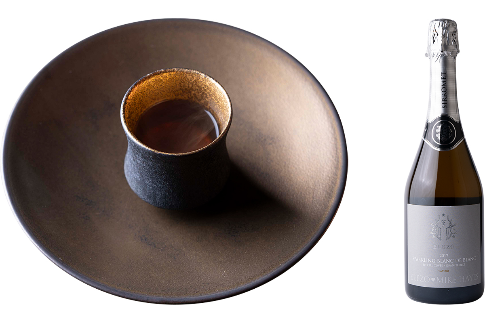
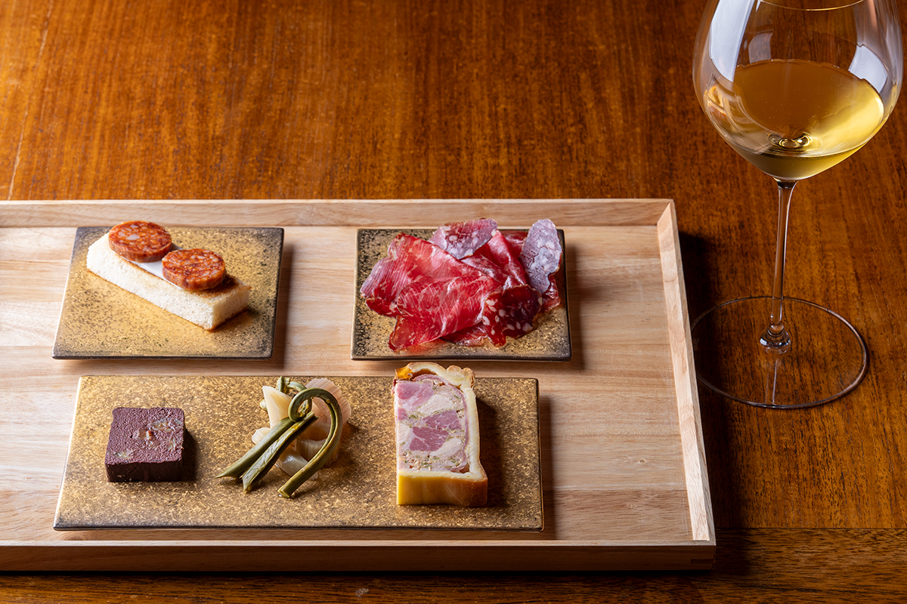
Шаркютри выбирают из нескольких десятков видов по сезону. Шардоне с оттенками дыни и инжира сделано из винограда, который растят на отдельном участке специально для ELEZO. К каждой главе курса подают своё вино: пять сортов специально под мясо ELEZO сделал австралийский винодел.
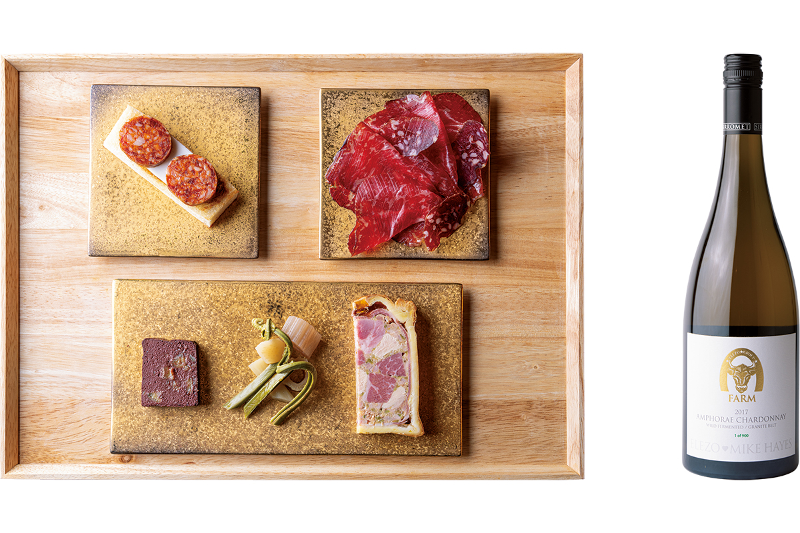
На третью главу подают осенний лосось из порта Оцу, а на четвёртую ветчину из свиньи, которая полтора года гуляла по склонам.
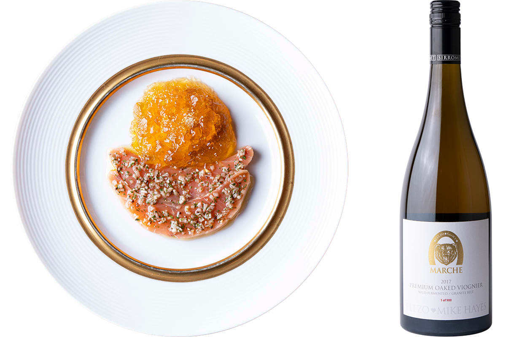
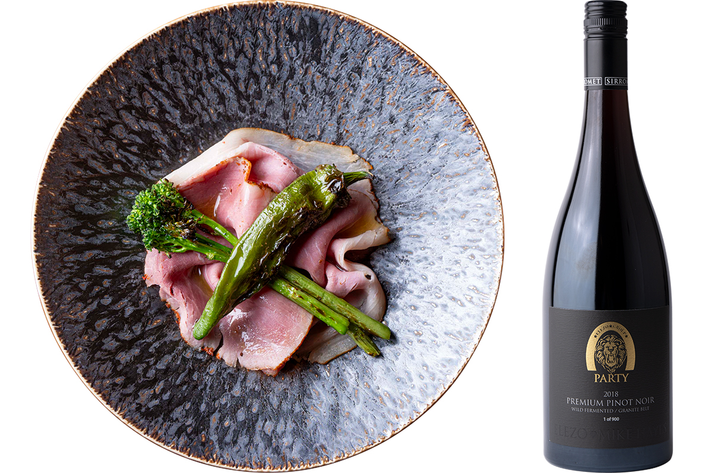
«Сегодня у нас двухлетние олени эдзо, самка и самец. Порода та же, возраст тот же, но пол и место, где зверь рос, меняют вкус и текстуру до неузнаваемости»
Сёта Сасаки
Мясо самки мягкое и чистое по вкусу, у самца оно мощнее и ароматнее. В этом блюде лучше всего понимаешь, ради чего вообще едят дичь.
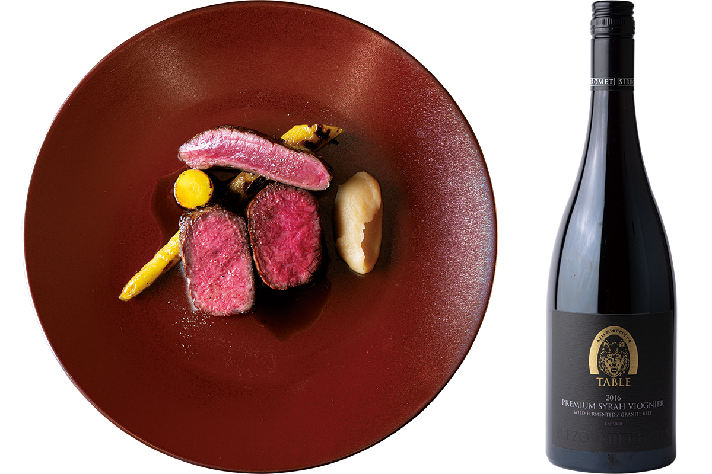
Курс заканчивается десертом.
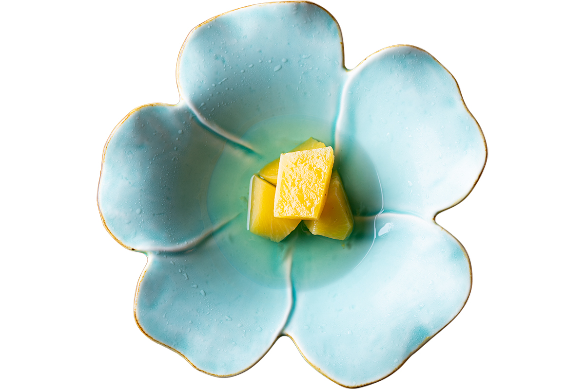
Кухня
Четыре отдела от охоты до тарелки
Всё в ELEZO начинается с того, как думает повар. Команда шла назад от вкуса блюда и улыбки гостя и так выстроила свою цепочку. В ней четыре отдела: охота и выращивание скота; разделка туш, выдержка и продажа мяса; шаркютри из тех частей, что редко нужны ресторанам; и рестораны, обержа ELEZO ESPRIT и бистро в Токио. Так ELEZO сама следит за всем от начала до конца.
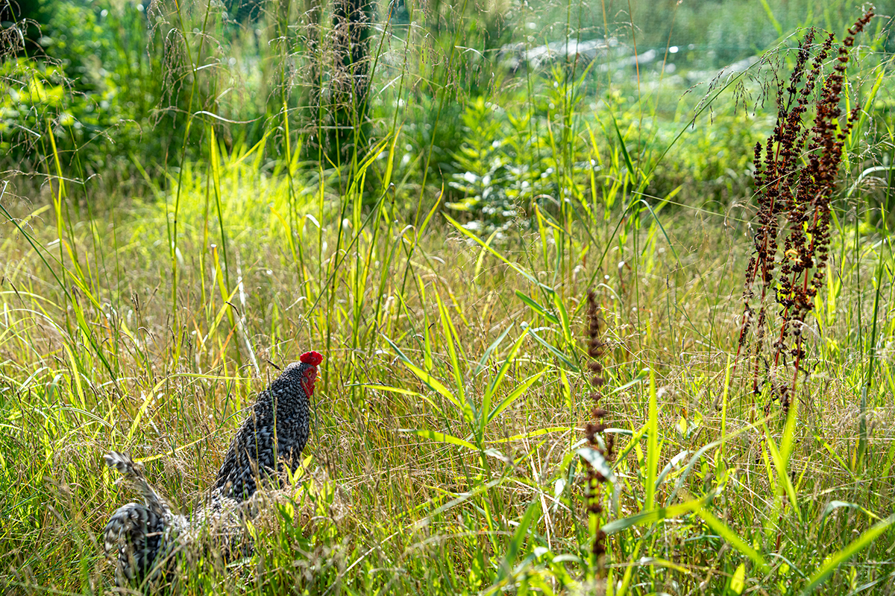
«Раз мы имеем дело с жизнью, мы благодарны за неё и отвечаем за неё. Поэтому в каждом отделе стремимся к ста баллам и складываем сто баллов к ста баллам. Чтобы от жизни до блюда шла одна чистая прямая линия»
Сёта Сасаки
Сто баллов начинаются с выстрела, поэтому у ELEZO три условия для охотников. Первое: стрелять в шею или в голову, иначе кровь расходится по туше и мясо портится. Второе: доставить добычу в лабораторию ELEZO не позже чем через полтора часа, чтобы быстро спустить кровь и убрать потроха. Третье: добывать зверя только в определённом возрасте, который для каждого вида выбран ради лучшего мяса.
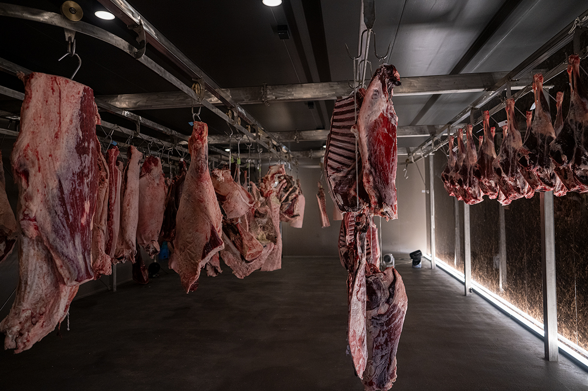
«Вкус мяса определяют порода, корм и среда. У слова „вкусно“ всегда есть причина. В Токати добывают оленя эдзо, бурого медведя, горлицу, но где зверь жил, в горах или на равнине, от этого зависит и корм, и развитие мышц. Поэтому у каждого мяса свой характер»
Сёта Сасаки
Скот ELEZO растит так же, как живёт дичь. Свиней пасут на горных склонах: мышечные волокна дают вкус, и склон заставляет их работать. Обычно свиней кормят калорийным кормом и отправляют на мясо примерно через полгода. В ELEZO их кормят варёными овощами и травой из Токати и растят полтора года. Мясо выходит ароматным, мягким и при этом упругим.
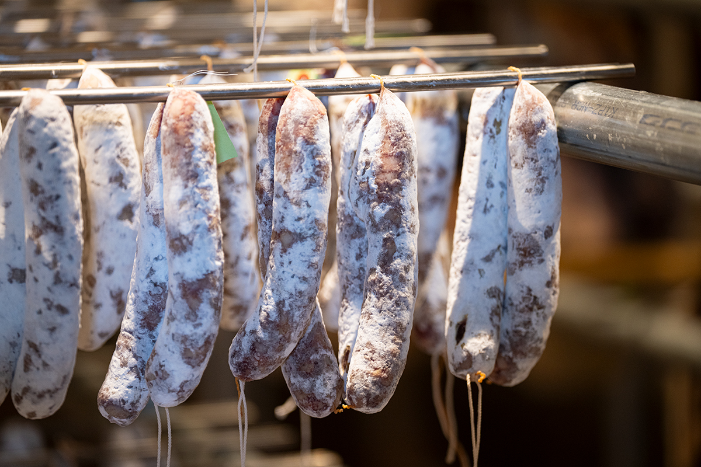
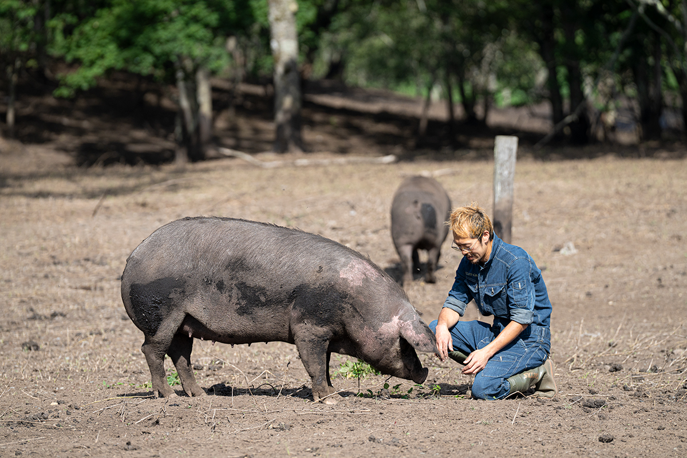
«Тоёкоро портовый город. Трава на пастбищах растёт на морском ветру и богата минералами, и это идёт на пользу животным, которые её едят»
сотрудник, который растит скот
Ночлег
Три виллы на холме над морем
ELEZO ESPRIT стоит на холме над морем. Здесь только ресторан и рядом с ним три виллы, а вокруг ничего, кроме природы. Когда садится солнце, в небе ясно видны луна и звёзды, и всё отчётливее слышны волны, птицы и шорохи мелких зверей.
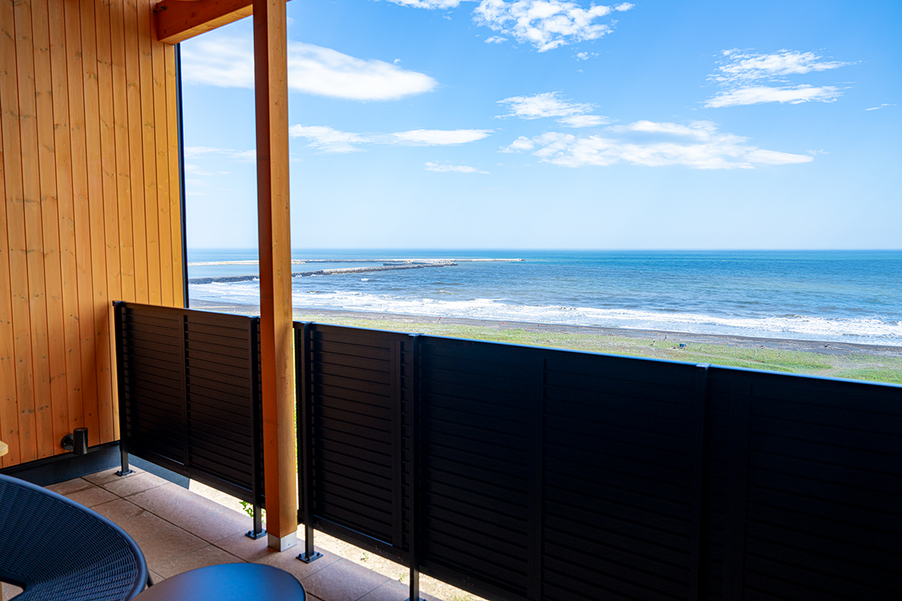
«ELEZO ESPRIT мы сделали, чтобы гости могли прикоснуться к философии, эстетике и духу, которые выросли у нас из встречи с жизнью и природой. Отдайтесь этой природе, попробуйте нашу еду, а потом и перед сном, и утром оставайтесь с её послевкусием»
Сёта Сасаки
Номера строгие и удобные, они не спорят с природой вокруг. На стенах чучело оленя эдзо и снимки мяса, и по ним видно, что ELEZO считает красивым.
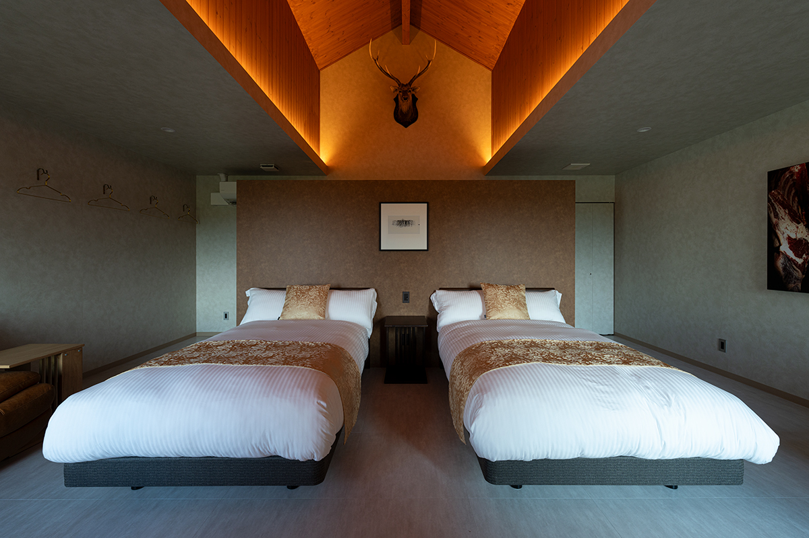
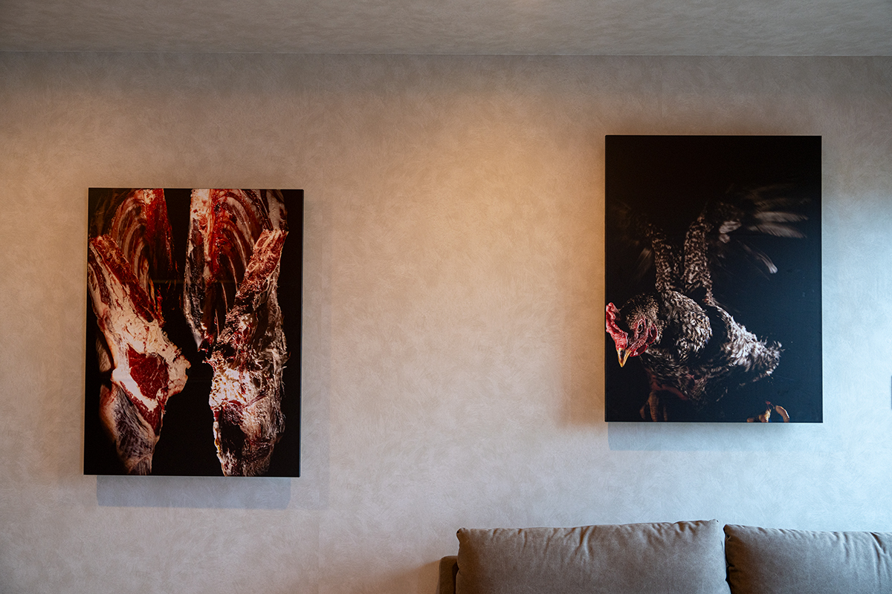
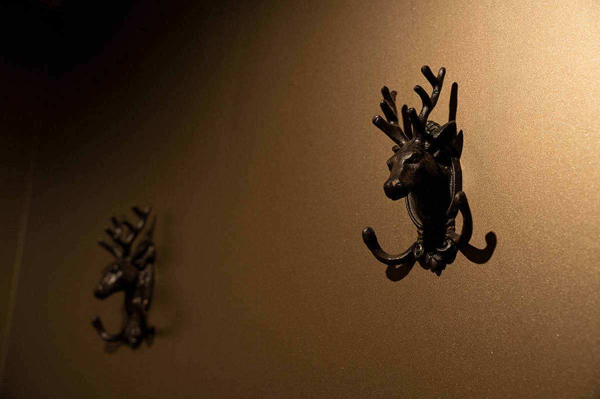
«Хотим, чтобы гость сосредоточился на жизни. Поэтому мы делали пространство, где мясо сияет, а за блюдом видна его история»
Сёта Сасаки
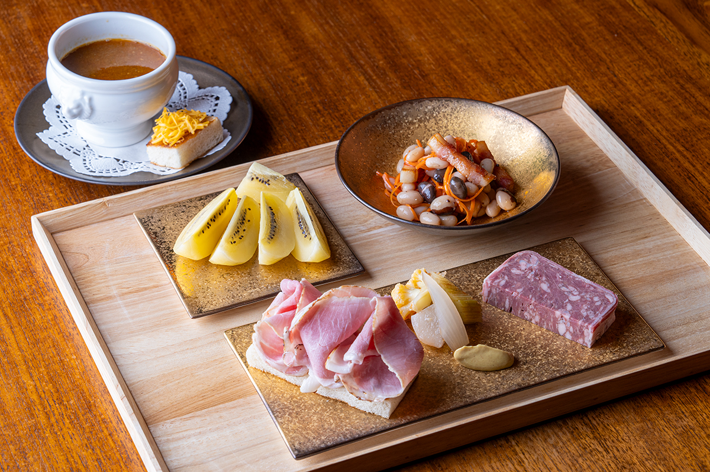
До выезда можно посидеть на террасе над морем и не торопясь обдумать то, что рассказала ELEZO. В 2023 году Сасаки говорил, что впереди вторая глава: он хотел вывести модель ELEZO, где одна команда отвечает за всё от зверя до тарелки, за пределы Японии.
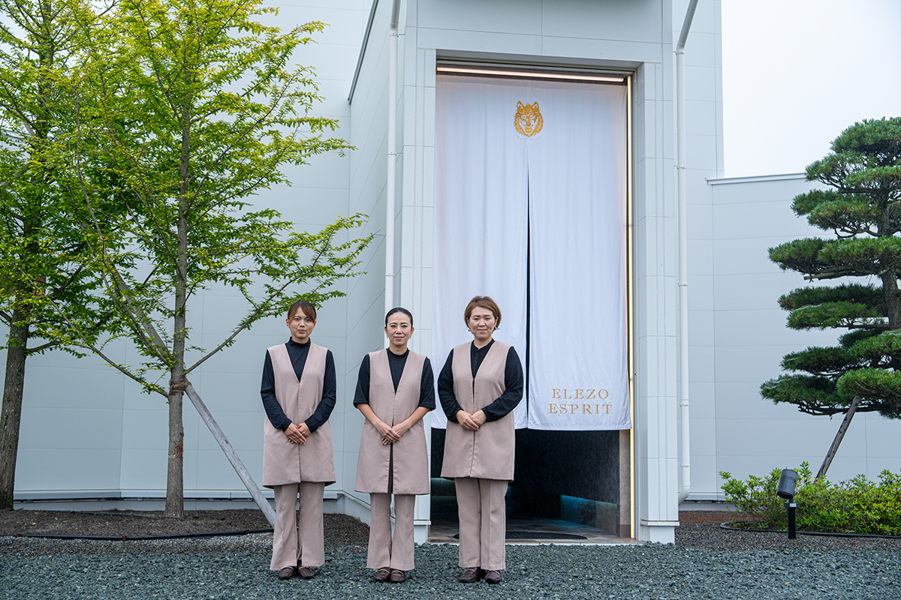
После ночи здесь по-настоящему понимаешь, откуда берётся еда, о которой, казалось, всё уже знаешь. И очень хочется узнать, какой будет следующая глава истории ELEZO.
ELEZO ESPRIT
- Адрес
- префектура Хоккайдо, уезд Накагава, Тоёкоро, Оцу, 127
- Телефон
- +81 70-1580-1010
- Номера
- 3 виллы
- Цены / Вход
- ночь с ужином и завтраком от 55 000 иен с налогом и сервисным сбором
- Заезд / выезд
- 14:00 / 13:00
- Как добраться
- около часа на машине от аэропорта Обихиро, есть тариф с такси-партнёром
- Сайт
- esprit.elezo.com
Фото: Ацуси Ямахира.